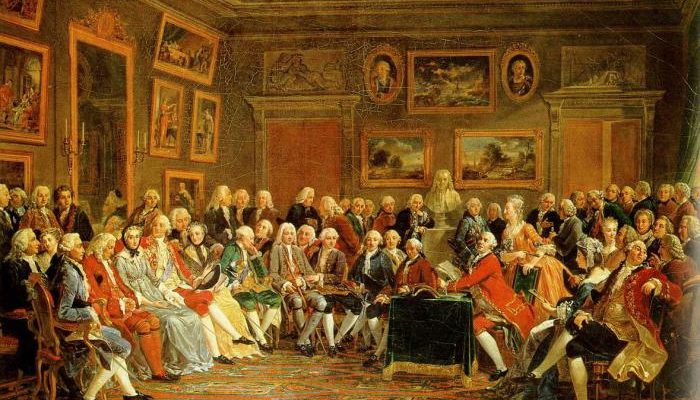
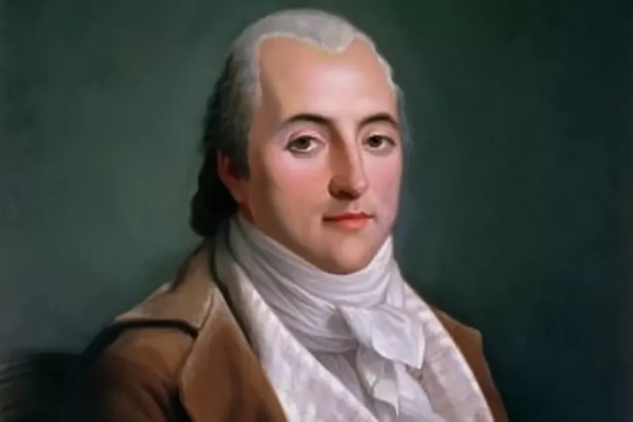

Франция XVIII–начала XIX века была страной бурных социальных перемен: Великая французская революция, свержение монархии, установление республиканских порядков, затем Наполеоновская империя и очередные реставрации. Всё это происходило на фоне глубоких социальных противоречий — с одной стороны, идеи свободы, равенства и братства, с другой — сохранение имущественного неравенства и эксплуатации трудящихся. В этих условиях рождались идеи социализма — сначала как мечты о справедливом обществе, а затем как попытки его рационально обосновать.
В отличие от немецкой классической философии, которая была преимущественно теоретической и абстрактной, французский социализм носил более практический, социально-политический характер. Он стремился предложить проекты устройства общества, где бедность и угнетение будут устранены, а люди будут жить в согласии и достатке. Эти идеи исходили от учёных, философов, писателей и общественных деятелей, которые пытались ответить на вызовы своего времени.
Французский социализм, который Маркс и Энгельс впоследствии назовут «утопическим», сыграл огромную роль в формировании мировоззрения будущих революционеров. Он не обладал ещё материалистической базой и не опирался на научный анализ экономики, но выдвигал принципы, которые позже станут составной частью марксизма: критику частной собственности, стремление к равенству, идею коллективного труда.
Ещё до социалистов важный вклад в развитие марксистского мировоззрения внесли материалисты французского Просвещения XVIII века. Дени Дидро, Поль Гольбах, Клод Адриан Гельвеций и другие развивали учение о том, что мир материален, природа существует независимо от человека, а сознание — продукт материальных условий. Они отвергали религиозные объяснения и искали законы природы и общества в самой действительности.
Дидро в своих работах подчеркивал изменчивость и развитие природы, а Гольбах систематически излагал атеистический материализм, утверждая, что мораль и социальные порядки можно строить без опоры на сверхъестественные силы. Гельвеций считал, что поведение человека определяется воспитанием и средой, что позже будет важно для социалистических представлений о формировании личности.
Французские материалисты заложили основу для критики религии, идеализма и сословных привилегий, а также утвердили мысль о том, что общество можно изменить путём изменения материальных условий жизни. Эти идеи станут фундаментом для перехода от утопического социализма к научному.
Сен-Симон (Клод Анри де Рувруа) видел будущее в обществе, где трудящиеся и учёные будут управлять производством в интересах всех, а не ради прибыли. Он предлагал заменить конкуренцию сотрудничеством, а частную собственность — общественным управлением. Хотя его взгляды ещё сохраняли веру в реформы «сверху», Сен-Симон сделал шаг к пониманию роли производительных сил в развитии общества.
Шарль Фурье создавал смелые, порой фантастические проекты «фаланстеров» — общин, где труд станет радостью, а каждый человек займётся делом, к которому он склонен. Он критиковал капитализм за эксплуатацию и деградацию нравов, мечтал об обществе, где гармония между человеком и природой будет восстановлена.
Роберт Оуэн, хотя и был англичанином, оказал сильное влияние и на Францию. Он, как промышленник и реформатор, пытался на практике улучшить условия жизни рабочих, создавая образцовые поселения. Оуэн считал, что изменение общества возможно через воспитание и улучшение материальных условий труда и быта.
Эти мыслители пытались решить социальный вопрос, исходя из нравственных принципов и гуманизма. Их проекты были «утопическими» не в презрительном смысле, а в том, что они не опирались на реальный анализ экономических законов и классовой борьбы, а верили в возможность согласия между классами.
Маркс и Энгельс высоко ценили французских социалистов за их гуманизм и стремление к социальной справедливости. Однако они подчёркивали, что утопический социализм не смог дать научного объяснения причин эксплуатации и пути её преодоления. Без анализа капиталистического способа производства, без понимания роли классовой борьбы эти идеи оставались благими пожеланиями.
В «Манифесте Коммунистической партии» Маркс и Энгельс писали, что утописты предлагали всем людям «принять» их проекты как разумные и справедливые, но не видели, что освобождение трудящихся должно быть делом самих трудящихся.
Марксизм взял у французского социализма его гуманистическую направленность, веру в коллективизм и идею преобразования общества, но соединил их с материалистическим пониманием истории и диалектическим методом. Вместо моральных призывов марксизм предложил научный анализ капитализма и обоснование революционного пути к социализму.